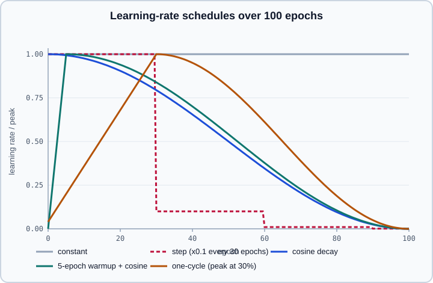

Optimizers & Learning-Rate Schedules
|
This content was generated with the assistance of AI and should be verified against the official documentation before being relied on in production. |
An optimizer is the rule that converts a gradient into a change of the weights. The plain gradient-descent step introduced in Gradient Descent & Optimization is only the starting point: deep networks have noisy mini-batch gradients, parameters with very different scales and long flat regions, and practical optimizers add memory (momentum), per-parameter step sizes (adaptive methods) and a time-varying learning rate (a schedule) to cope. This page explains each family, when to prefer which, and how to wire optimizer and schedule together correctly in PyTorch and Keras.
Examples target Python 3.13, PyTorch 2.15 and TensorFlow 2.21 with Keras 3.15. Examples were run on Python 3.13 with PyTorch 2.15 (CPU) and Keras 3.15 on TensorFlow 2.21 on 2026-11-01. The page assumes the training loop of Training Deep Networks and the autodiff machinery of Backpropagation & Automatic Differentiation. How to pick the numbers in practice is the subject of Tuning Deep Networks in Practice.
The optimizer’s job
With parameters \(\theta\), a mini-batch loss \(L_t(\theta)\) and gradient \(g_t = \nabla_\theta L_t(\theta_{t-1})\), every optimizer in this page has the form
\[ \theta_t = \theta_{t-1} - \eta_t \, u_t \]
where \(\eta_t\) is the learning rate at step \(t\) (the schedule decides it) and \(u_t\) is the update direction (the optimizer decides it). Plain SGD uses \(u_t = g_t\). Everything else is a different way of building \(u_t\) from the history of gradients. Three practical consequences follow:
-
The learning rate is the most important hyperparameter of the whole system, and its best value depends on the optimizer, the batch size, the model width and the schedule. A value copied from another setup is a starting point, not an answer.
-
An optimizer carries state (momentum buffers, second-moment estimates, a step counter). That state must be saved with the weights to resume training exactly, and it multiplies the memory used by the parameters (see Hardware, Memory & Mixed Precision).
-
Optimizers differ in how they treat the scale of each parameter. SGD moves every weight by an amount proportional to its own gradient; Adam-style methods move every weight by roughly \(\eta\) regardless of the gradient’s magnitude.
Stochastic gradient descent and momentum
SGD computes \(g_t\) on a mini-batch and steps against it. Its noise is both a feature (it helps leave sharp minima and saddle points) and a cost (the iterate keeps bouncing unless the learning rate decays). Momentum keeps an exponentially decaying average of past gradients, the "velocity":
\[ v_t = \mu \, v_{t-1} + g_t, \qquad \theta_t = \theta_{t-1} - \eta_t \, v_t \]
with \(\mu\) typically 0.9. Along directions where gradients agree, velocity accumulates and the effective step grows by up to \(1/(1-\mu)\); along directions where they alternate sign, contributions cancel. This damps oscillation across narrow valleys and speeds progress along their floor. PyTorch and Keras both implement exactly this form, in which the learning rate multiplies the velocity (some textbooks fold \(\eta\) into the velocity instead; the two are equivalent only for a constant learning rate, which matters when you change the rate during training).
Nesterov momentum evaluates the gradient at the look-ahead position \(\theta_{t-1} - \eta \mu v_{t-1}\) instead of at \(\theta_{t-1}\), which corrects overshoot a little earlier. In PyTorch pass nesterov=True (it requires momentum greater than zero and zero dampening); in Keras pass nesterov=True to keras.optimizers.SGD.
SGD with momentum remains a strong default for convolutional networks, where it often generalises as well as or better than adaptive methods when the schedule is tuned. It needs more learning-rate care than Adam because every parameter shares one step size.
Adaptive methods
Adaptive methods keep a running estimate of the gradient’s size per parameter and divide by it, so rarely updated or small-gradient parameters take relatively larger steps.
-
AdaGrad accumulates the sum of squared gradients \(G_t = \sum_{i \le t} g_i^2\) and steps by \(g_t / (\sqrt{G_t} + \epsilon)\). The accumulated sum only grows, so the effective step shrinks forever; that suits sparse convex problems and is a poor fit for long deep-learning runs.
-
RMSProp replaces the sum with an exponential average, \(s_t = \rho \, s_{t-1} + (1-\rho) g_t^2\), so the denominator forgets old gradients.
-
Adam combines momentum on the gradient with an RMSProp-style average of its square, plus bias correction for the zero initialisation of both averages:
\[ m_t = \beta_1 m_{t-1} + (1-\beta_1) g_t, \qquad s_t = \beta_2 s_{t-1} + (1-\beta_2) g_t^2 \]
\[ \hat m_t = \frac{m_t}{1-\beta_1^t}, \qquad \hat s_t = \frac{s_t}{1-\beta_2^t}, \qquad \theta_t = \theta_{t-1} - \eta_t \frac{\hat m_t}{\sqrt{\hat s_t} + \epsilon} \]
The defaults \(\beta_1 = 0.9\), \(\beta_2 = 0.999\) and \(\epsilon = 10^{-8}\) work for most problems, and a learning rate around \(10^{-3}\) is the usual first guess for small networks (transformers and large models need much smaller peaks, commonly \(10^{-4}\) to \(10^{-3}\) scaled down with width). Because each step is about \(\eta\) per parameter regardless of gradient scale, Adam is forgiving about feature and layer scaling and is the default for transformers, recurrent networks and most prototyping.
Details that bite in practice:
-
The \(\epsilon\) matters. It is a stabiliser, but with half-precision training or very small gradients its value changes the update size. The playbook discussed in Tuning Deep Networks in Practice treats Adam’s \(\epsilon\), \(\beta_1\) and \(\beta_2\) as hyperparameters worth tuning once the learning rate is right.
-
Adam stores two extra tensors per parameter (first and second moment), so optimizer state costs twice the size of the weights in float32, on top of weights and gradients.
-
Adaptive does not mean tuning-free. The learning rate still needs a search, and Adam usually needs warmup for large models (see below).
-
Second-moment spikes. A very large gradient inflates \(s_t\) for a long time because \(\beta_2\) is close to 1; clipping the gradient norm protects against it.
Newer optimizers
Several optimizers target specific regimes. Adafactor factors the second-moment matrix to cut memory for very large models. LAMB and LARS rescale updates layer by layer for very large batches. Lion uses the sign of a momentum-like quantity and keeps one state tensor instead of two. Muon applies orthogonalised momentum to two-dimensional weight matrices and is meant to be paired with another optimizer for embeddings, biases and norm parameters; recent PyTorch releases ship a torch.optim.Muon class, and Keras 3 has a Muon optimizer too. Check the current torch.optim and keras.optimizers pages for the exact class list and arguments before relying on them, because this area changes with every release. For a first model, SGD with momentum or AdamW is almost always the right choice; switch only when memory, batch size or a published recipe for your model family gives a reason.
Weight decay is not the same as L2 in Adam
L2 regularisation adds \(\tfrac{\lambda}{2}\lVert\theta\rVert^2\) to the loss, which adds \(\lambda\theta\) to the gradient. With plain SGD this is the same as weight decay, which shrinks the weights directly: \(\theta \leftarrow (1 - \eta\lambda)\theta - \eta g\). With an adaptive optimizer the two differ, because the added \(\lambda\theta\) term is divided by \(\sqrt{\hat s_t}\) like any other gradient component, so parameters with a large gradient history get less effective decay. AdamW (Loshchilov and Hutter, "Decoupled Weight Decay Regularization") applies the decay outside the adaptive rescaling:
\[ \theta_t = \theta_{t-1} - \eta_t \left( \frac{\hat m_t}{\sqrt{\hat s_t} + \epsilon} + \lambda \, \theta_{t-1} \right) \]
The practical rules are:
-
Use AdamW, not Adam with
weight_decay, when you want weight decay with an adaptive optimizer. In PyTorch,torch.optim.Adam(weight_decay=...)implements the coupled L2 form;torch.optim.AdamWimplements the decoupled form. Keraskeras.optimizers.AdamWis decoupled as well, and its defaultweight_decayis 0.004, which is not zero. -
Do not decay biases and normalisation scales or offsets. These one-dimensional parameters have no overfitting benefit from shrinkage, and decaying normalisation scales can hurt. The common pattern is two parameter groups: matrices and convolution kernels with decay, everything with
ndim < 2without. -
The best \(\lambda\) interacts with the learning rate (the shrink per step is \(\eta\lambda\)) and with the schedule. Typical AdamW values are 0.01 to 0.1 for transformers and vision models; tune it as a regulariser alongside dropout and augmentation (see Training Deep Networks).
Gradient clipping
Clipping by global norm rescales the whole gradient vector when its norm exceeds a threshold \(c\): \(g \leftarrow g \cdot \min(1, c / \lVert g \rVert)\). It keeps the direction and limits the step, which tames exploding gradients in recurrent networks and rare loss spikes in transformers. Clip after backpropagation (and after unscaling when using a gradient scaler for half-precision training) and before optimizer.step(). A threshold of 1.0 is a common default; log the unclipped norm to see how often clipping fires, since a value that clips every step is acting as a learning-rate reduction rather than as a safety net. In PyTorch use torch.nn.utils.clip_grad_norm_(parameters, max_norm), which returns the total norm. In Keras pass global_clipnorm=1.0 (global norm) to the optimizer; clipnorm clips each variable’s gradient separately and clipvalue clips elementwise, which changes the direction of the update.
Learning-rate schedules
A constant learning rate is rarely best: a large rate makes fast early progress and then bounces around a minimum, and a small rate is slow. Schedules start high and decay, and for many models start low and warm up first.

-
Step decay multiplies the rate by a factor (for example 0.1) at fixed epochs or every N epochs. It is simple and still common in image classification recipes, but the milestones are extra hyperparameters.
-
Exponential decay multiplies by a constant factor each step or epoch.
-
Cosine decay follows \(\eta_t = \eta_{\min} + \tfrac12(\eta_{\max} - \eta_{\min})\bigl(1 + \cos(\pi t / T)\bigr)\). It has one free parameter, the horizon \(T\), and ends smoothly near the minimum, which is why it is the default in many modern recipes. Cosine annealing with warm restarts repeats it in cycles.
-
Linear decay to zero is the other common choice, especially for fine-tuning.
-
Warmup ramps the rate linearly from near zero over the first few hundred or thousand steps (or a few epochs). Early in training the adaptive second-moment estimates are poor, the weights are random and large steps can diverge or lock the network into a bad region; warmup is cheap insurance and is close to mandatory for transformers and for very large batches.
-
One-cycle (Smith) raises the rate to a high peak then anneals it far below the start, usually together with an inverse momentum schedule; it can train quickly with a large peak rate.
-
Plateau-based decay (
ReduceLROnPlateau) multiplies the rate by a factor when a monitored validation metric stops improving for a patience period. It needs no horizon but depends on a noisy signal and complicates comparing runs. -
Warmup, stable, decay (WSD) holds the peak rate constant for most of training and decays it only at the end, which lets you extend or stop a run without recomputing a cosine horizon; it is used for long pre-training runs.
Two scheduling choices matter more than the shape. First, the schedule length must match the training budget: a cosine that ends at step \(T\) assumes you train exactly \(T\) steps, so changing the number of epochs means changing the schedule, and results of runs with different budgets are not comparable. Second, decide whether the schedule steps per batch or per epoch. Warmup and cosine are best stepped per batch (smooth), step decay per epoch; the library schedulers differ in which they expect, and mixing them up is the commonest bug (see the pitfalls table).
Scaling the learning rate with batch size
When you change the batch size \(B\), the best learning rate changes. For SGD a common starting rule is the linear scaling rule, \(\eta \propto B\), together with a warmup; for Adam, a square-root scaling \(\eta \propto \sqrt{B}\) is often a better first guess, and neither is exact. The playbook’s advice is to retune the learning rate whenever the batch size changes by a large factor rather than trust a rule. Batch size itself should be chosen for throughput and memory, not tuned to improve validation loss (see Tuning Deep Networks in Practice).
The learning-rate range test
To find a plausible peak rate quickly, run a short training in which the learning rate rises geometrically from a tiny value (for example \(10^{-7}\)) to a large one (for example 1) over a few hundred steps while you record the loss. The loss stays flat, falls, then explodes. Pick a peak about an order of magnitude below the point where the loss was lowest, or at the steepest descent. It is a rough guide, not a replacement for a proper search, and it assumes the data and architecture are final.
PyTorch: optimizers, parameter groups and schedulers
The following example builds AdamW with two parameter groups (decay and no decay), a linear warmup followed by cosine decay stepped per batch with SequentialLR, clipping and a complete loop on synthetic data. scheduler.step() is called after optimizer.step().
import torch
from torch import nn
torch.manual_seed(0)
device = torch.accelerator.current_accelerator() or torch.device("cpu")
model = nn.Sequential(nn.Linear(20, 64), nn.ReLU(), nn.Linear(64, 1)).to(device)
# Weight decay only on matrices (ndim >= 2); never on biases or norm parameters.
decay, no_decay = [], []
for name, param in model.named_parameters():
if param.requires_grad:
(decay if param.ndim >= 2 else no_decay).append(param)
optimizer = torch.optim.AdamW(
[
{"params": decay, "weight_decay": 0.01},
{"params": no_decay, "weight_decay": 0.0},
],
lr=1e-3,
betas=(0.9, 0.999),
eps=1e-8,
)
epochs, steps_per_epoch = 5, 40
total_steps = epochs * steps_per_epoch
warmup_steps = 20
warmup = torch.optim.lr_scheduler.LinearLR(
optimizer, start_factor=0.01, end_factor=1.0, total_iters=warmup_steps
)
cosine = torch.optim.lr_scheduler.CosineAnnealingLR(
optimizer, T_max=total_steps - warmup_steps, eta_min=1e-5
)
scheduler = torch.optim.lr_scheduler.SequentialLR(
optimizer, schedulers=[warmup, cosine], milestones=[warmup_steps]
)
x = torch.randn(1024, 20, device=device)
y = x[:, :1] * 2.0 + 0.1 * torch.randn(1024, 1, device=device)
loss_fn = nn.MSELoss()
step = 0
for epoch in range(epochs):
perm = torch.randperm(len(x), device=device)
for i in range(steps_per_epoch):
idx = perm[i * 25 : (i + 1) * 25]
optimizer.zero_grad(set_to_none=True)
loss = loss_fn(model(x[idx]), y[idx])
loss.backward()
grad_norm = torch.nn.utils.clip_grad_norm_(model.parameters(), max_norm=1.0)
optimizer.step()
scheduler.step() # after optimizer.step(), once per batch here
step += 1
print(f"epoch {epoch} loss {loss.item():.4f} grad_norm {grad_norm.item():.3f} "
f"lr {scheduler.get_last_lr()[0]:.2e}")Source: torch.optim and torch.optim.AdamW.
Points the documentation stresses:
-
Order. Call
optimizer.step()beforescheduler.step(). The reverse skips the first value of the schedule and PyTorch warns about it. -
Parameter containers. Pass a list of tensors or a list of dictionaries. Passing a bare
setof parameters has an undefined order, and PyTorch 2.15 warns about it. -
Per-group options. Every key in a group dictionary (
lr,weight_decay,betas,momentum) overrides the optimizer default for that group, and a scheduler scales each group’s learning rate separately. This is how you use a smaller rate for a pre-trained backbone than for a new head (see Transfer Learning, Fine-Tuning & Foundation Models). -
Implementation flags. On CUDA,
fused=True(or the defaultforeachimplementation) is faster than the single-tensor loop; the documentation lists which optimizers supportfused. -
Epoch-wise schedulers.
StepLR,MultiStepLRandExponentialLRare normally stepped once per epoch;OneCycleLRandCyclicLRare stepped once per batch;ReduceLROnPlateautakes the metric:scheduler.step(val_loss). -
Custom shape.
LambdaLRaccepts a function of the step that returns a multiplier of the initial rate, which is the easy way to write warmup-stable-decay or an inverse-square-root schedule.
import math
import torch
from torch import nn
model = nn.Linear(10, 1)
optimizer = torch.optim.SGD(model.parameters(), lr=0.1, momentum=0.9, nesterov=True)
total, warmup = 1000, 50
def warmup_stable_decay(step: int) -> float:
if step < warmup: # linear warmup
return (step + 1) / warmup
if step < int(0.8 * total): # stable plateau
return 1.0
progress = (step - int(0.8 * total)) / (total - int(0.8 * total))
return 0.5 * (1.0 + math.cos(math.pi * progress)) # cosine tail to zero
scheduler = torch.optim.lr_scheduler.LambdaLR(optimizer, lr_lambda=warmup_stable_decay)
lrs = []
for step in range(total):
optimizer.step() # in a real loop: zero_grad, forward, backward first
scheduler.step()
lrs.append(scheduler.get_last_lr()[0])
print(f"start {lrs[0]:.4f} plateau {lrs[500]:.4f} end {lrs[-1]:.6f}")Saving and resuming optimizer state
Resume exactly by saving the model, the optimizer and the scheduler together, and restoring all three. Loading with the default weights_only=True of torch.load (the default since PyTorch 2.6) works for these dictionaries of tensors and numbers; do not switch it off for files you did not create.
import torch
from torch import nn
model = nn.Linear(4, 2)
optimizer = torch.optim.AdamW(model.parameters(), lr=1e-3)
scheduler = torch.optim.lr_scheduler.CosineAnnealingLR(optimizer, T_max=100)
checkpoint = {
"model": model.state_dict(),
"optimizer": optimizer.state_dict(),
"scheduler": scheduler.state_dict(),
"epoch": 7,
}
torch.save(checkpoint, "checkpoint.pt")
state = torch.load("checkpoint.pt", map_location="cpu") # weights_only=True by default
model.load_state_dict(state["model"])
optimizer.load_state_dict(state["optimizer"])
scheduler.load_state_dict(state["scheduler"])
print("resume at epoch", state["epoch"] + 1)Source: torch.optim.Optimizer.load_state_dict and torch.load.
Two cautions. Build the optimizer over the same parameters, in the same group structure, before calling load_state_dict; the state is matched by position. If you change the learning rate by hand after loading, remember that the scheduler’s state_dict also stores its base rates and last step. Old tutorials that pickle the whole optimizer or model with torch.save(optimizer) fail under the safe default loader and are fragile across versions anyway.
Keras: optimizers and schedules
In Keras 3, optimizers live in keras.optimizers and accept either a float or a schedule object as learning_rate. Schedules are callables of the step, so they are stepped per batch automatically. CosineDecay supports linear warmup directly through warmup_target and warmup_steps.
import numpy as np
import keras
from keras import layers
keras.utils.set_random_seed(0)
epochs, batch_size = 5, 25
x = np.random.randn(1024, 20).astype("float32")
y = (x[:, :1] * 2.0 + 0.1 * np.random.randn(1024, 1)).astype("float32")
steps_per_epoch = len(x) // batch_size
total_steps = epochs * steps_per_epoch
schedule = keras.optimizers.schedules.CosineDecay(
initial_learning_rate=0.0, # start of the warmup
decay_steps=total_steps - 20, # cosine part; the warmup comes first
warmup_target=1e-3, # peak learning rate reached after warmup
warmup_steps=20,
alpha=0.01, # final rate as a fraction of the peak
)
optimizer = keras.optimizers.AdamW(
learning_rate=schedule,
weight_decay=0.01,
global_clipnorm=1.0,
)
model = keras.Sequential(
[layers.Input((20,)), layers.Dense(64, activation="relu"), layers.Dense(1)]
)
model.compile(optimizer=optimizer, loss="mse")
history = model.fit(x, y, batch_size=batch_size, epochs=epochs, verbose=0)
print("final loss:", round(history.history["loss"][-1], 4))
print("learning rate after training:", float(schedule(optimizer.iterations)))Source: Keras: CosineDecay and Keras: AdamW.
Keras specifics worth knowing:
-
ReduceLROnPlateauandLearningRateSchedulerare callbacks that change the optimizer’s learning rate variable between epochs. A schedule object makes the learning rate read-only, so the plateau callback cannot be combined with one; pick a schedule object or a callback, not both. -
Optimizer arguments changed between Keras 2 and 3. Old code uses
lr=anddecay=; Keras 3 useslearning_rate=and schedules instead ofdecay. Oldtf.keras.optimizers.legacy.*classes exist only through the Keras 2 package (tf_keras, installed withTF_USE_LEGACY_KERAS=1set before importing TensorFlow); do not mix them with Keras 3 in one process. -
Exponential moving average of weights. Passing
use_ema=True(withema_momentumand optionallyema_overwrite_frequency) makes the optimizer maintain averaged weights that often evaluate better than the raw ones. -
Custom loops. In a
tf.GradientTapeor JAX training step, calloptimizer.apply(grads, variables);apply_gradientsis the pair-list form kept for compatibility. -
Callback-based schedule. For an epoch-level schedule,
keras.callbacks.LearningRateScheduler(fn)callsfn(epoch, lr)at the start of each epoch and uses the returned value.
import keras
def step_decay(epoch, lr):
# Halve the learning rate every 10 epochs, keep it otherwise.
return lr * 0.5 if epoch > 0 and epoch % 10 == 0 else lr
callbacks = [
keras.callbacks.LearningRateScheduler(step_decay),
keras.callbacks.ReduceLROnPlateau(monitor="val_loss", factor=0.5, patience=3, min_lr=1e-6),
]
# model.fit(..., validation_data=..., callbacks=callbacks)Source: Keras: LearningRateScheduler and Keras: ReduceLROnPlateau.
The snippet above combines two callbacks that both write the learning rate, which is allowed but hard to reason about; in a real project keep one mechanism.
Choosing an optimizer and schedule
| Situation | Reasonable default | Notes |
|---|---|---|
Convolutional image classifier from scratch |
SGD with momentum 0.9 and Nesterov, weight decay around 5e-4, cosine or step decay |
Tune the peak rate first; generalisation is often a little better than Adam when the schedule is right. |
Transformer, language model or vision transformer |
AdamW (0.9, 0.95 or 0.999), weight decay 0.01 to 0.1, warmup then cosine or linear decay, clipping at 1.0 |
Warmup is close to mandatory; the peak rate shrinks as the model gets wider. |
Fine-tuning a pre-trained model |
AdamW with a small peak rate (around 1e-5 to 1e-4), short warmup, linear or cosine decay |
Use a smaller rate for the backbone than for the new head via parameter groups. |
Recurrent network |
Adam or RMSProp with gradient clipping |
Clipping by global norm addresses exploding gradients. |
Small tabular MLP |
Adam at 1e-3, optionally ReduceLROnPlateau |
Compare with gradient boosting before investing in tuning (see Tabular Data: Gradient Boosting vs Deep Learning). |
Memory-bound very large model |
Adafactor, 8-bit or sharded optimizer state |
Optimizer state is often the largest term after the weights. |
Common pitfalls
| Symptom or mistake | Cause and fix |
|---|---|
Schedule shape looks wrong in logs |
|
Loss is |
Peak rate too high, no warmup, or a gradient spike. Add warmup, clip the global norm, lower the rate and check the data for non-finite values. |
Weight decay seems to do nothing with Adam |
Coupled L2 in |
Resumed run differs from the original |
Optimizer or scheduler state not restored, or the optimizer was built over different parameters. Save and load model, optimizer and scheduler together. |
Cosine schedule ends before or after training does |
Horizon \(T\) not tied to the real number of steps. Compute total steps from the data loader length and epochs. |
Different batch size gives worse results with the same rate |
The rate and warmup depend on batch size. Retune the peak rate when the batch size changes a lot. |
Plateau callback fails with a schedule object in Keras |
A schedule object cannot be modified by a callback. Choose one mechanism. |
Old code passes |
Legacy Keras 2 spelling. Keras 3 uses |
Checklist
-
Start with AdamW (transformers, most prototypes) or SGD with momentum (convolutional networks) and a published recipe for your architecture.
-
Tune the peak learning rate first on a log scale, with the schedule shape fixed.
-
Use warmup for adaptive optimizers on large models and for large batches.
-
Tie the schedule horizon to the actual number of optimizer steps.
-
Apply weight decay to weight matrices only and use a decoupled implementation with adaptive methods.
-
Clip the global gradient norm when losses spike, and log the unclipped norm.
-
Save model, optimizer and scheduler state together.
-
Retune the learning rate when batch size, width or training length changes substantially.